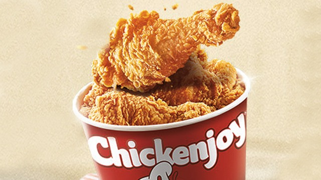

About Myself

Name: Milbert Naigal
Birthdate: September 21, 2006
Address: Brgy6, Buenavista Agusan Del Norte
Course and Year level: BSIT 2nd year
My Childhood
My childhood was simple and meaningful. It was a time when I learned values such as respect, honesty, and kindness.
My Teenage Life
My teenage life was full of changes and challenges. During this time, I learned how to be independent and responsible.
My Adulthood
Adulthood is a stage where I learn to take responsibility for my actions and decisions. It is a time when I begin to focus more on my goals and future plans.
My Hobbies
- Playing online games
- Watching movies and anime
- Reading comics and manhwa
My Favorites
Artist: Daniel Caesar

Food: Chicken
Place: Siargao

Animal: Dog

Anime: Haikyuu